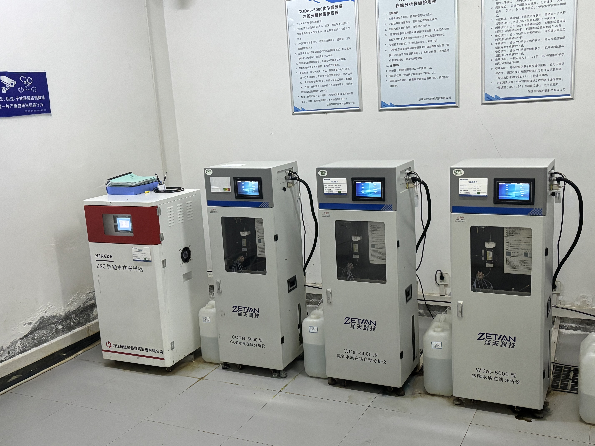
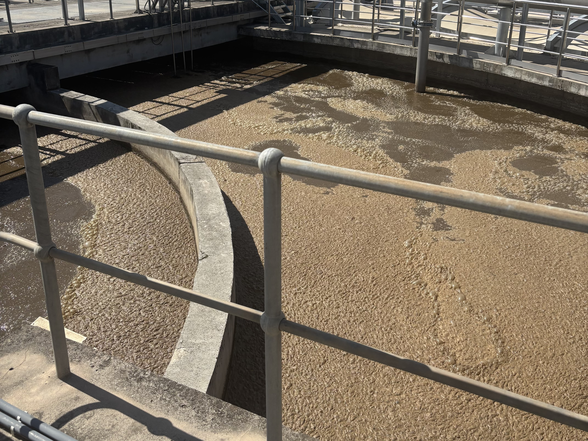
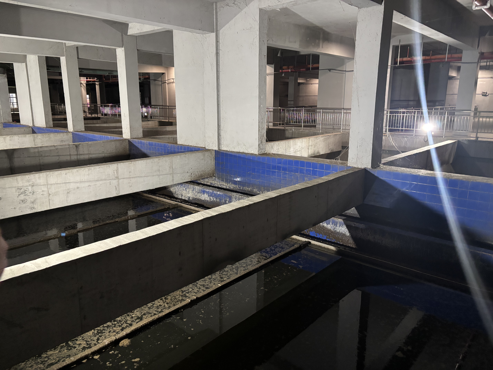

物联网感知网络状态
在线传感器数12 / 12
边缘计算网关正常运行
数据采集频率高频实时 (1s)
视频监控在线4 / 4
当前选中节点：生化段
多参数传感器阵列运行中...
• 在线监测仪: 实时读数
• 视频码流: RTSP 解析正常
• 数据源正在动态监听。
• 视频码流: RTSP 解析正常
• 数据源正在动态监听。
现场监控 (CCTV)

CAM 1 监测间

CAM 2 进水泵房

CAM 3 曝气池

CAM 4 二沉池
进水口
生化段
出水口
实时规范数据集 (生化段)
| 采集时间 | COD (mg/L) | 氨氮 (mg/L) | 总氮 (mg/L) | 总磷 (mg/L) | pH值 |
|---|
历史数据趋势 (COD & 氨氮)